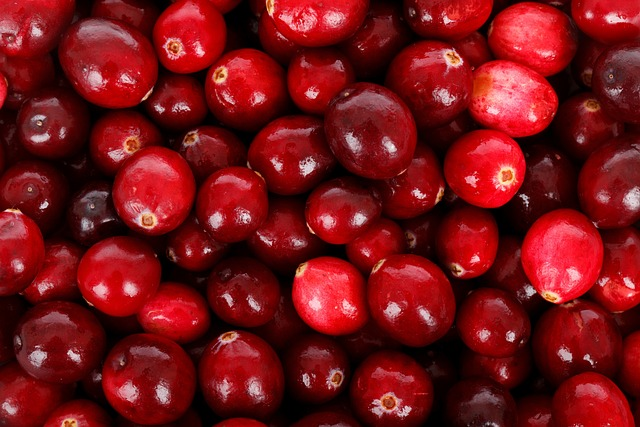

The Whitman Cranberry Farm, a family-run cranberry farm in the sleepy village of Cranberryville, is where Cranberry Co. first began. The Whitman family had been raising cranberries for many generations, and their dedication to excellence laid the groundwork for Cranberry Co.

To spread the world's love of cranberries has always been our clear-cut goal. Cranberries, in our opinion, are more than just a fruit; they stand for harmony and community. We hope to promote happiness, foster relationships, and provide special moments through our products.

We stand out because of our unwavering commitment to excellence. Our cranberries are cultivated in Cranberryville's fertile soil, where decades of experience have refined our farming methods. We meticulously choose each cranberry at the ideal stage of ripeness to ensure unmatched flavor and juiciness.
